Hier sind die 120 neuesten von 1.310 Materialien. Alle im Material-Finder ansehen

Materialpaket Winter und Advent für die 7. Klasse: 10 Lesespurgeschichten mit Rätselaufgaben fächerübergreifend (Weihnachtsoratorium, Südpol, Eishockey & mehr)

Rauchen und Vapes – warum Nikotin abhängig macht – Lesespurgeschichte mit Rätselaufgaben (Klasse 7)

Organspende – eine Entscheidung fürs Leben – Lesespurgeschichte mit Rätselaufgaben (Klasse 7)

Der Winterschlaf – Lesespurgeschichte mit Rätselaufgaben (Klasse 7)

Der Vogelzug – Lesespurgeschichte mit Rätselaufgaben (Klasse 7)

Die Zähne – Lesespurgeschichte mit Rätselaufgaben (Klasse 7)

Das Ohr – Lesespurgeschichte mit Rätselaufgaben (Klasse 7)

Das Auge – Lesespurgeschichte mit Rätselaufgaben (Klasse 7)

Die Muskeln – Lesespurgeschichte mit Rätselaufgaben (Klasse 7)

Die Atmung – Lesespurgeschichte mit Rätselaufgaben (Klasse 7)

Die Verdauung – Lesespurgeschichte mit Rätselaufgaben (Klasse 7)

Das Skelett – Lesespurgeschichte mit Rätselaufgaben (Klasse 7)

Die Schlange – Lesespurgeschichte mit Rätselaufgaben (Klasse 7)

Die Nahrungskette – Lesespurgeschichte mit Rätselaufgaben (Klasse 7)

Der Vogel – Lesespurgeschichte mit Rätselaufgaben (Klasse 7)

Die Honigbiene – Lesespurgeschichte mit Rätselaufgaben (Klasse 7)

Der Blutkreislauf – Lesespurgeschichte mit Rätselaufgaben (Klasse 7)

Der Bauernhof – Lesespurgeschichte mit Rätselaufgaben (Klasse 7)

Der Mischwald – Lesespurgeschichte mit Rätselaufgaben (Klasse 7)
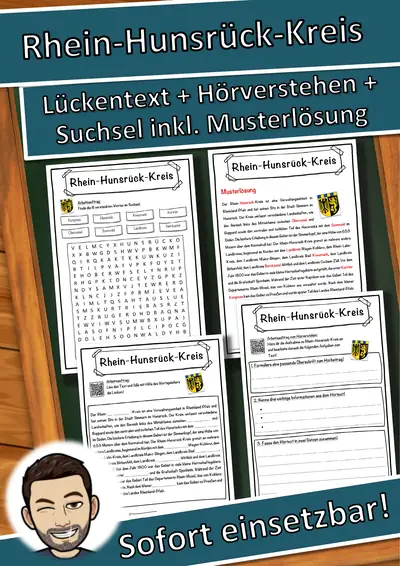
Rhein-Hunsrück-Kreis Lückentext mit Wortspeicher Hörverstehen und Suchsel
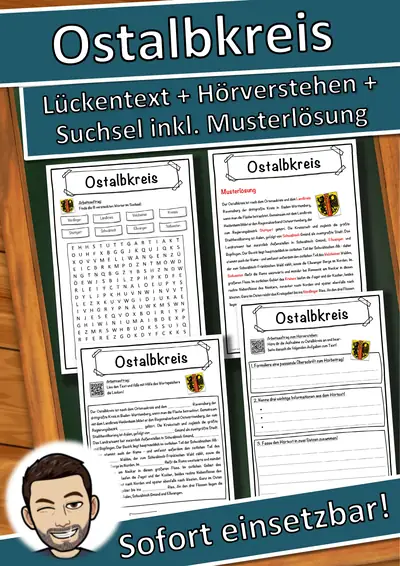
Ostalbkreis Lückentext mit Wortspeicher Hörverstehen und Suchsel
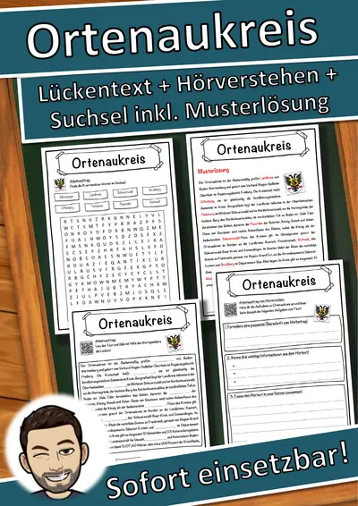
Ortenaukreis Lückentext mit Wortspeicher Hörverstehen und Suchsel
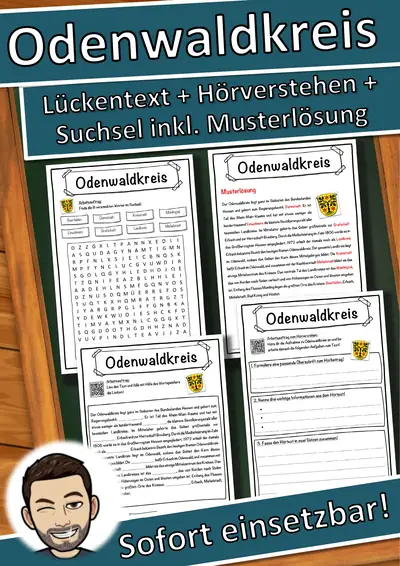
Odenwaldkreis Lückentext mit Wortspeicher Hörverstehen und Suchsel
Landkreis Zwickau Lückentext mit Wortspeicher Hörverstehen und Suchsel
Landkreis Wolfenbüttel Lückentext mit Wortspeicher Hörverstehen und Suchsel
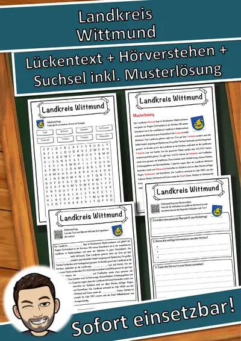
Landkreis Wittmund Lückentext mit Wortspeicher Hörverstehen und Suchsel
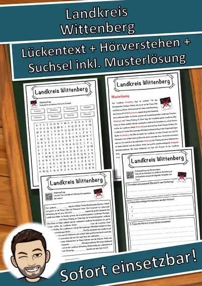
Landkreis Wittenberg Lückentext mit Wortspeicher Hörverstehen und Suchsel
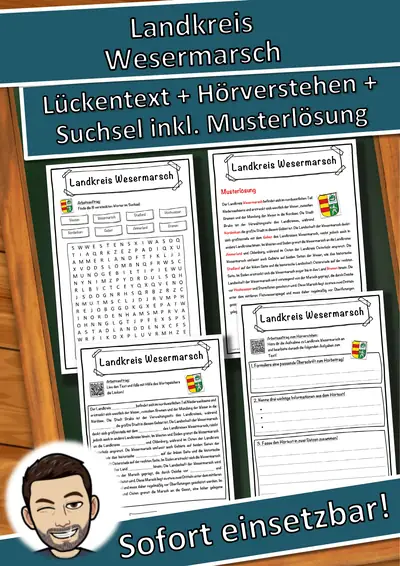
Landkreis Wesermarsch Lückentext mit Wortspeicher Hörverstehen und Suchsel
Landkreis Weimarer Land Lückentext mit Wortspeicher Hörverstehen und Suchsel
Landkreis Waldeck-Frankenberg Lückentext mit Wortspeicher Hörverstehen und Suchsel
Landkreis Vulkaneifel Lückentext mit Wortspeicher Hörverstehen und Suchsel
Landkreis Vorpommern-Rügen Lückentext mit Wortspeicher Hörverstehen und Suchsel
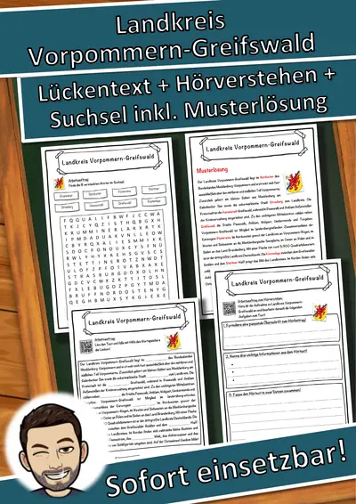
Landkreis Vorpommern-Greifswald Lückentext mit Wortspeicher Hörverstehen und Suchsel
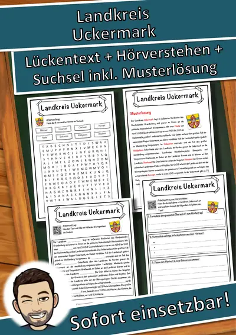
Landkreis Uckermark Lückentext mit Wortspeicher Hörverstehen und Suchsel
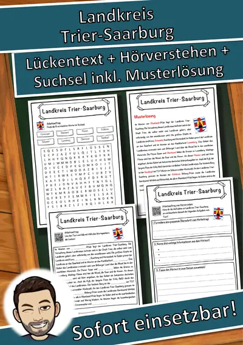
Landkreis Trier-Saarburg Lückentext mit Wortspeicher Hörverstehen und Suchsel
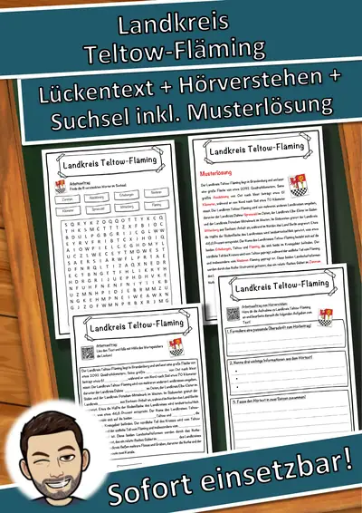
Landkreis Teltow-Fläming Lückentext mit Wortspeicher Hörverstehen und Suchsel
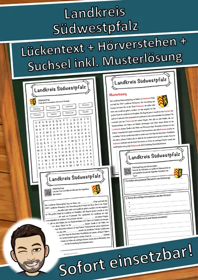
Landkreis Südwestpfalz Lückentext mit Wortspeicher Hörverstehen und Suchsel
Landkreis Südliche Weinstraße Lückentext mit Wortspeicher Hörverstehen und Suchsel
Landkreis Sömmerda Lückentext mit Wortspeicher Hörverstehen und Suchsel
Landkreis Sächsische Schweiz-Osterzgebirge Lückentext mit Wortspeicher Hörverstehen und Suchsel
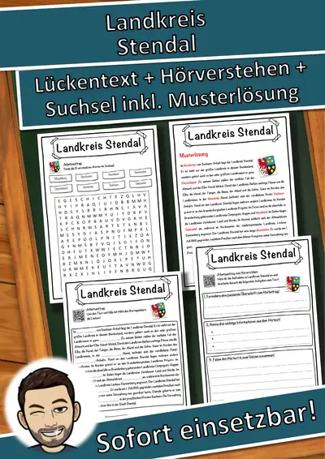
Landkreis Stendal Lückentext mit Wortspeicher Hörverstehen und Suchsel
Landkreis Spree-Neiße Lückentext mit Wortspeicher Hörverstehen und Suchsel
Landkreis Sonneberg Lückentext mit Wortspeicher Hörverstehen und Suchsel
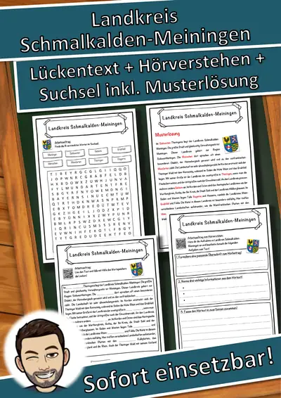
Landkreis Schmalkalden-Meiningen Lückentext mit Wortspeicher Hörverstehen und Suchsel
Landkreis Saalfeld-Rudolstadt Lückentext mit Wortspeicher Hörverstehen und Suchsel
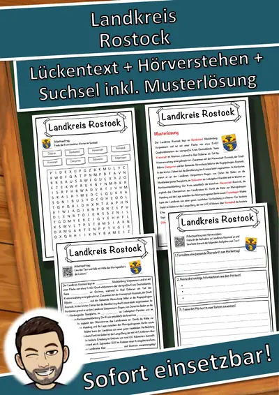
Landkreis Rostock Lückentext mit Wortspeicher Hörverstehen und Suchsel
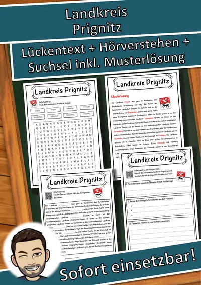
Landkreis Prignitz Lückentext mit Wortspeicher Hörverstehen und Suchsel
Landkreis Potsdam-Mittelmark Lückentext mit Wortspeicher Hörverstehen und Suchsel
Landkreis Ostprignitz-Ruppin Lückentext mit Wortspeicher Hörverstehen und Suchsel
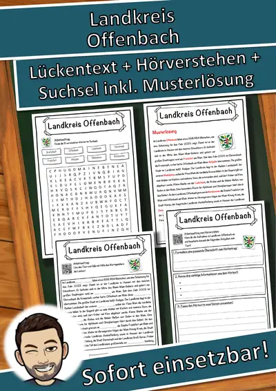
Landkreis Offenbach Lückentext mit Wortspeicher Hörverstehen und Suchsel
Landkreis Oder-Spree Lückentext mit Wortspeicher Hörverstehen und Suchsel
Landkreis Oberspreewald-Lausitz Lückentext mit Wortspeicher Hörverstehen und Suchsel
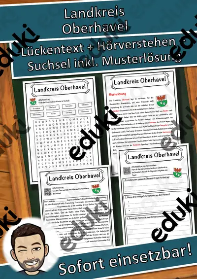
Landkreis Oberhavel Lückentext mit Wortspeicher Hörverstehen und Suchsel
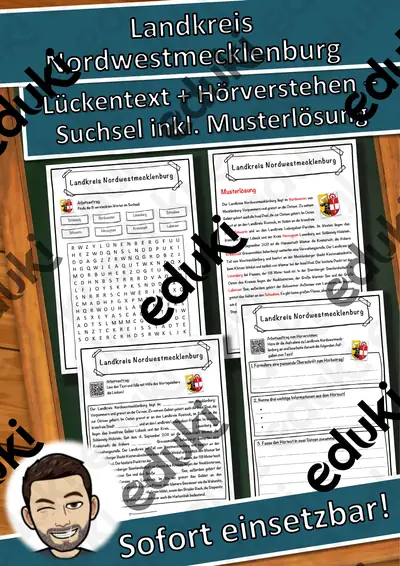
Landkreis Nordwestmecklenburg Lückentext mit Wortspeicher Hörverstehen und Suchsel
Landkreis Nordsachsen Lückentext mit Wortspeicher Hörverstehen und Suchsel
Landkreis Nordhausen Lückentext mit Wortspeicher Hörverstehen und Suchsel
Landkreis Neuwied Lückentext mit Wortspeicher Hörverstehen und Suchsel
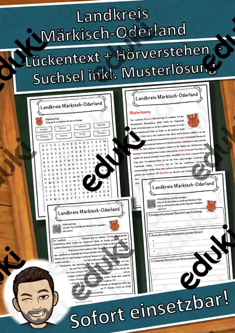
Landkreis Märkisch-Oderland Lückentext mit Wortspeicher Hörverstehen und Suchsel
Landkreis Birkenfeld Lückentext mit Wortspeicher Hörverstehen und Suchsel
Landkreis Mittelsachsen Lückentext mit Wortspeicher Hörverstehen und Suchsel
Landkreis Meißen Lückentext mit Wortspeicher Hörverstehen und Suchsel
Landkreis Mecklenburgische Seenplatte Lückentext mit Wortspeicher Hörverstehen und Suchsel
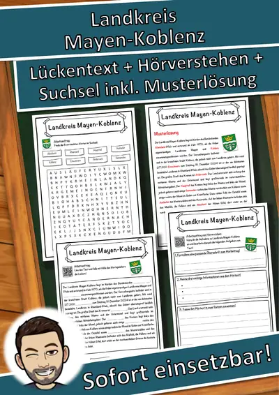
Landkreis Mayen-Koblenz Lückentext mit Wortspeicher Hörverstehen und Suchsel
Landkreis Marburg-Biedenkopf Lückentext mit Wortspeicher Hörverstehen und Suchsel
Landkreis Mansfeld-Südharz Lückentext mit Wortspeicher Hörverstehen und Suchsel
Landkreis Mainz-Bingen Lückentext mit Wortspeicher Hörverstehen und Suchsel
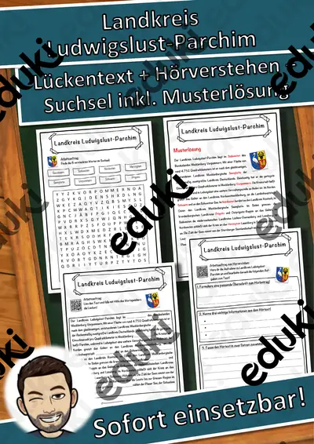
Landkreis Ludwigslust-Parchim Lückentext mit Wortspeicher Hörverstehen und Suchsel
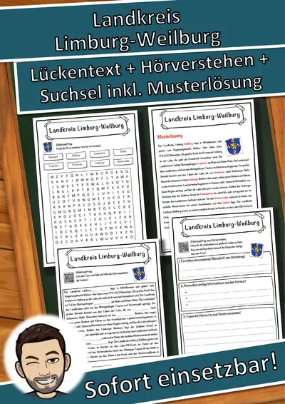
Landkreis Limburg-Weilburg Lückentext mit Wortspeicher Hörverstehen und Suchsel
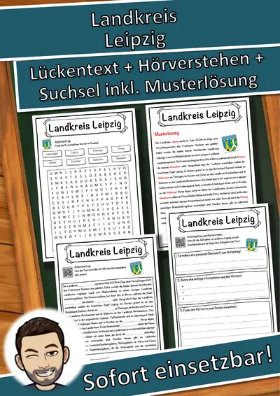
Landkreis Leipzig Lückentext mit Wortspeicher Hörverstehen und Suchsel
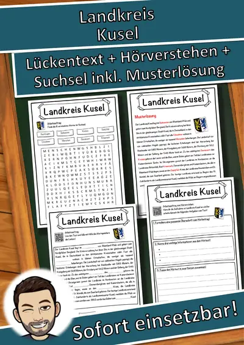
Landkreis Kusel Lückentext mit Wortspeicher Hörverstehen und Suchsel
Landkreis Kassel Lückentext mit Wortspeicher Hörverstehen und Suchsel
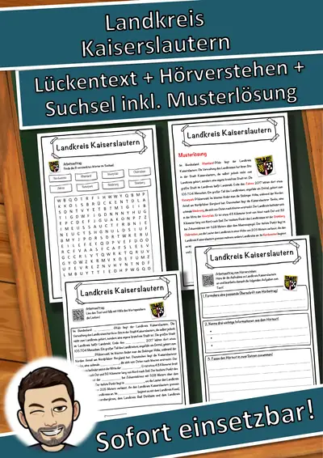
Landkreis Kaiserslautern Lückentext mit Wortspeicher Hörverstehen und Suchsel
Landkreis Jerichower Land Lückentext mit Wortspeicher Hörverstehen und Suchsel
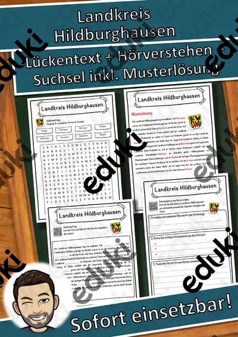
Landkreis Hildburghausen Lückentext mit Wortspeicher Hörverstehen und Suchsel
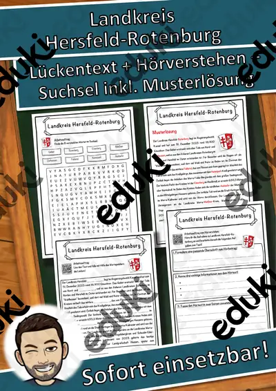
Landkreis Hersfeld-Rotenburg Lückentext mit Wortspeicher Hörverstehen und Suchsel
Landkreis Havelland Lückentext mit Wortspeicher Hörverstehen und Suchsel
Landkreis Harz Lückentext mit Wortspeicher Hörverstehen und Suchsel
Landkreis Görlitz Lückentext mit Wortspeicher Hörverstehen und Suchsel
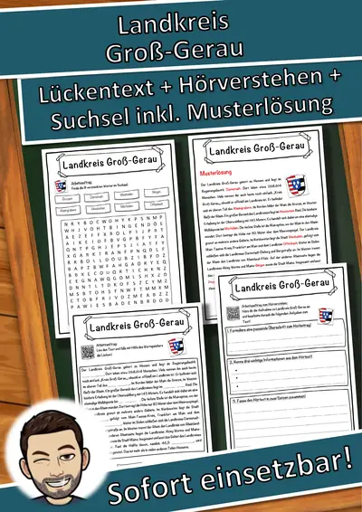
Landkreis Groß-Gerau Lückentext mit Wortspeicher Hörverstehen und Suchsel
Landkreis Greiz Lückentext mit Wortspeicher Hörverstehen und Suchsel
Landkreis Gotha Lückentext mit Wortspeicher Hörverstehen und Suchsel
Landkreis Gießen Lückentext mit Wortspeicher Hörverstehen und Suchsel
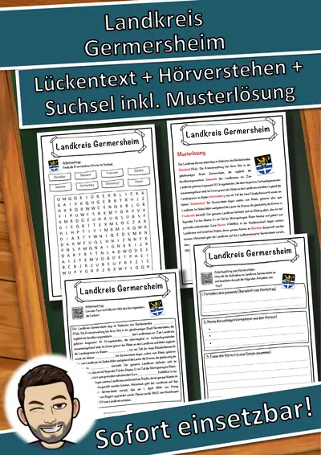
Landkreis Germersheim Lückentext mit Wortspeicher Hörverstehen und Suchsel
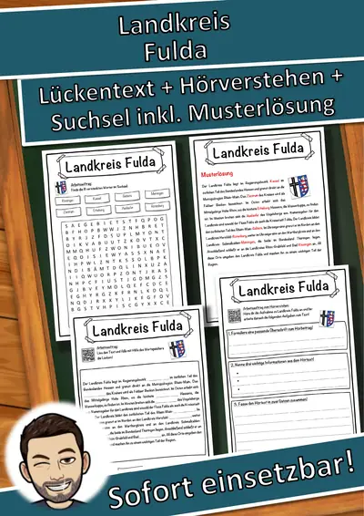
Landkreis Fulda Lückentext mit Wortspeicher Hörverstehen und Suchsel
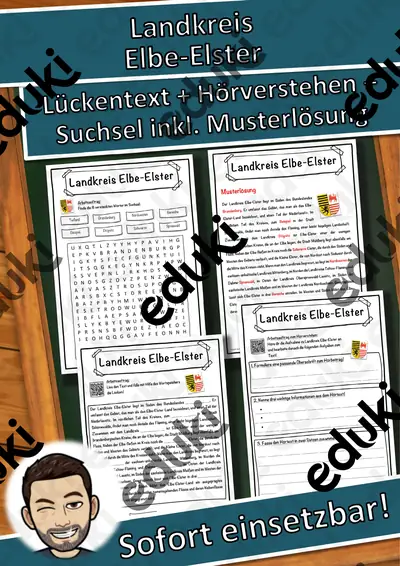
Landkreis Elbe-Elster Lückentext mit Wortspeicher Hörverstehen und Suchsel
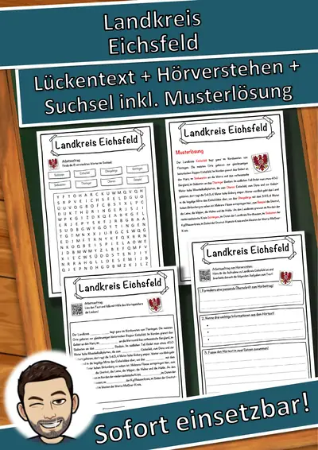
Landkreis Eichsfeld Lückentext mit Wortspeicher Hörverstehen und Suchsel
Landkreis Darmstadt-Dieburg Lückentext mit Wortspeicher Hörverstehen und Suchsel
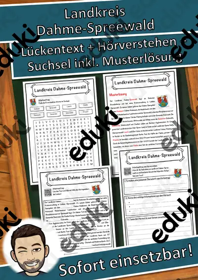
Landkreis Dahme-Spreewald Lückentext mit Wortspeicher Hörverstehen und Suchsel
Landkreis Cochem-Zell Lückentext mit Wortspeicher Hörverstehen und Suchsel
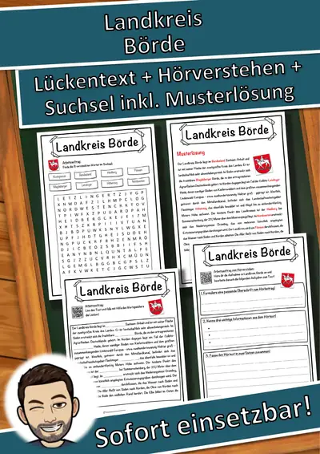
Landkreis Börde Lückentext mit Wortspeicher Hörverstehen und Suchsel
Landkreis Bernkastel-Wittlich Lückentext mit Wortspeicher Hörverstehen und Suchsel
Landkreis Bergstraße Lückentext mit Wortspeicher Hörverstehen und Suchsel
Landkreis Bautzen Lückentext mit Wortspeicher Hörverstehen und Suchsel
Landkreis Barnim Lückentext mit Wortspeicher Hörverstehen und Suchsel
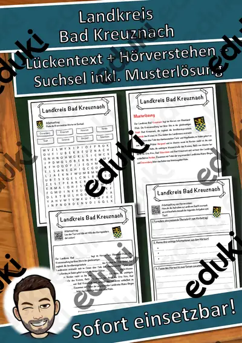
Landkreis Bad Kreuznach Lückentext mit Wortspeicher Hörverstehen und Suchsel
Landkreis Bad Dürkheim Lückentext mit Wortspeicher Hörverstehen und Suchsel
Landkreis Anhalt-Bitterfeld Lückentext mit Wortspeicher Hörverstehen und Suchsel
Landkreis Alzey-Worms Lückentext mit Wortspeicher Hörverstehen und Suchsel
Landkreis Altenkirchen (Westerwald) Lückentext mit Wortspeicher Hörverstehen und Suchsel
Landkreis Altenburger Land Lückentext mit Wortspeicher Hörverstehen und Suchsel
Landkreis Ahrweiler Lückentext mit Wortspeicher Hörverstehen und Suchsel
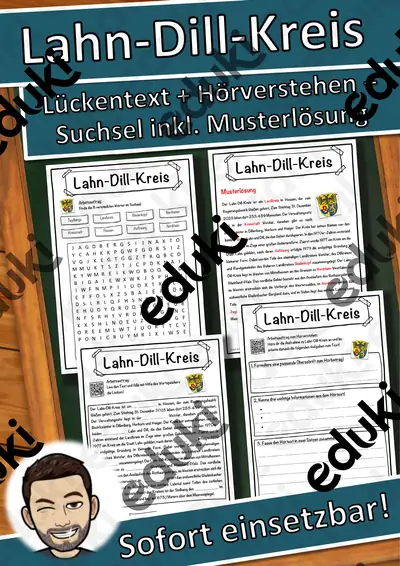
Lahn-Dill-Kreis Lückentext mit Wortspeicher Hörverstehen und Suchsel
Kyffhäuserkreis Lückentext mit Wortspeicher Hörverstehen und Suchsel
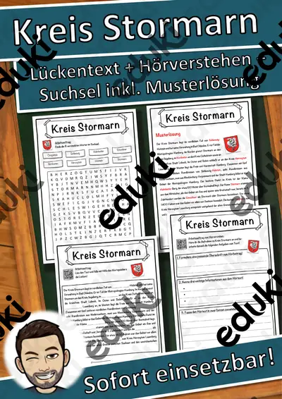
Kreis Stormarn Lückentext mit Wortspeicher Hörverstehen und Suchsel
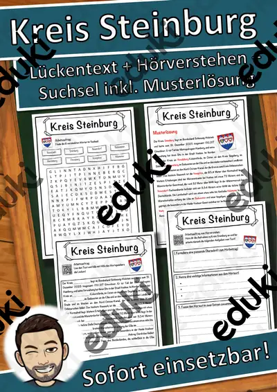
Kreis Steinburg Lückentext mit Wortspeicher Hörverstehen und Suchsel
Kreis Segeberg Lückentext mit Wortspeicher Hörverstehen und Suchsel
Kreis Schleswig-Flensburg Lückentext mit Wortspeicher Hörverstehen und Suchsel
Kreis Rendsburg-Eckernförde Lückentext mit Wortspeicher Hörverstehen und Suchsel
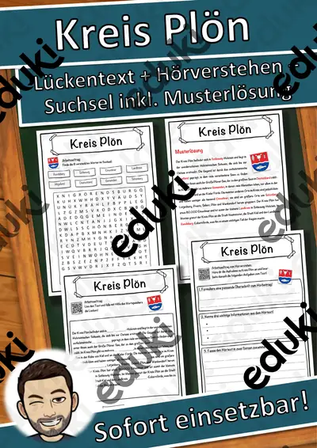
Kreis Plön Lückentext mit Wortspeicher Hörverstehen und Suchsel
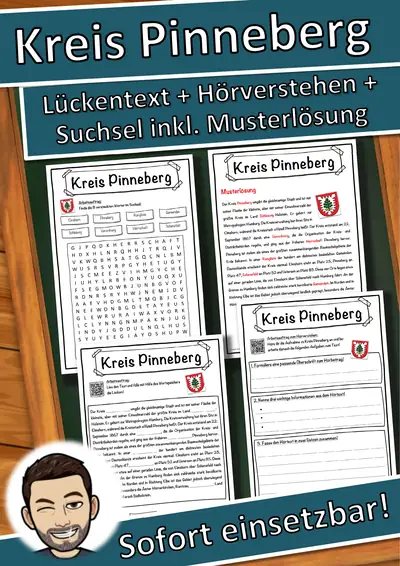
Kreis Pinneberg Lückentext mit Wortspeicher Hörverstehen und Suchsel
Kreis Ostholstein Lückentext mit Wortspeicher Hörverstehen und Suchsel
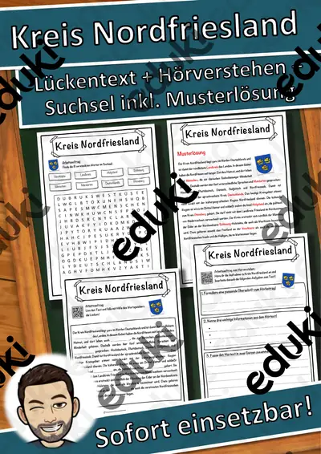
Kreis Nordfriesland Lückentext mit Wortspeicher Hörverstehen und Suchsel
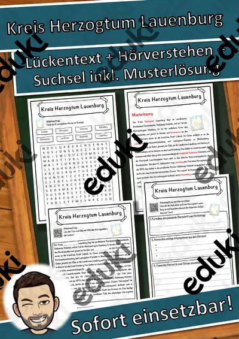
Kreis Herzogtum Lauenburg Lückentext mit Wortspeicher Hörverstehen und Suchsel
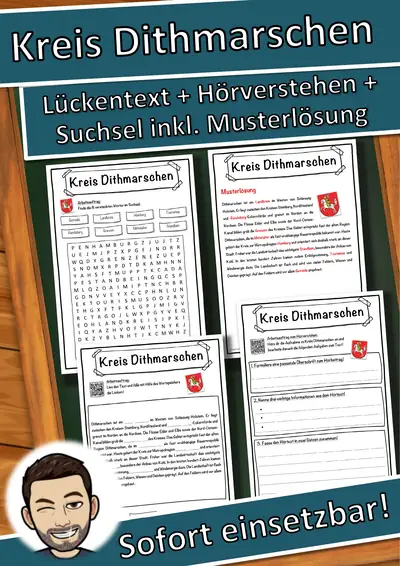
Kreis Dithmarschen Lückentext mit Wortspeicher Hörverstehen und Suchsel
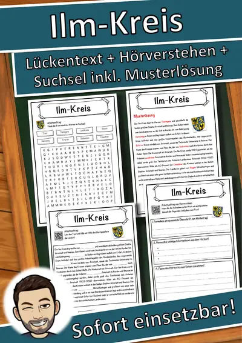
Ilm-Kreis Lückentext mit Wortspeicher Hörverstehen und Suchsel
Hohenlohekreis Lückentext mit Wortspeicher Hörverstehen und Suchsel
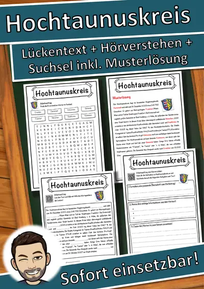
Hochtaunuskreis Lückentext mit Wortspeicher Hörverstehen und Suchsel
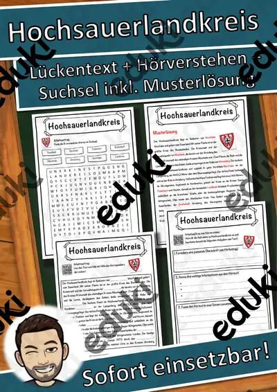
Hochsauerlandkreis Lückentext mit Wortspeicher Hörverstehen und Suchsel
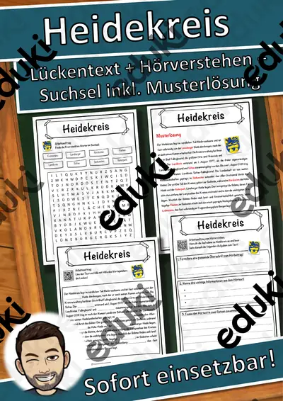
Heidekreis Lückentext mit Wortspeicher Hörverstehen und Suchsel
Erzgebirgskreis Lückentext mit Wortspeicher Hörverstehen und Suchsel
Keine Materialien gefunden – versuch einen anderen Suchbegriff oder Filter.